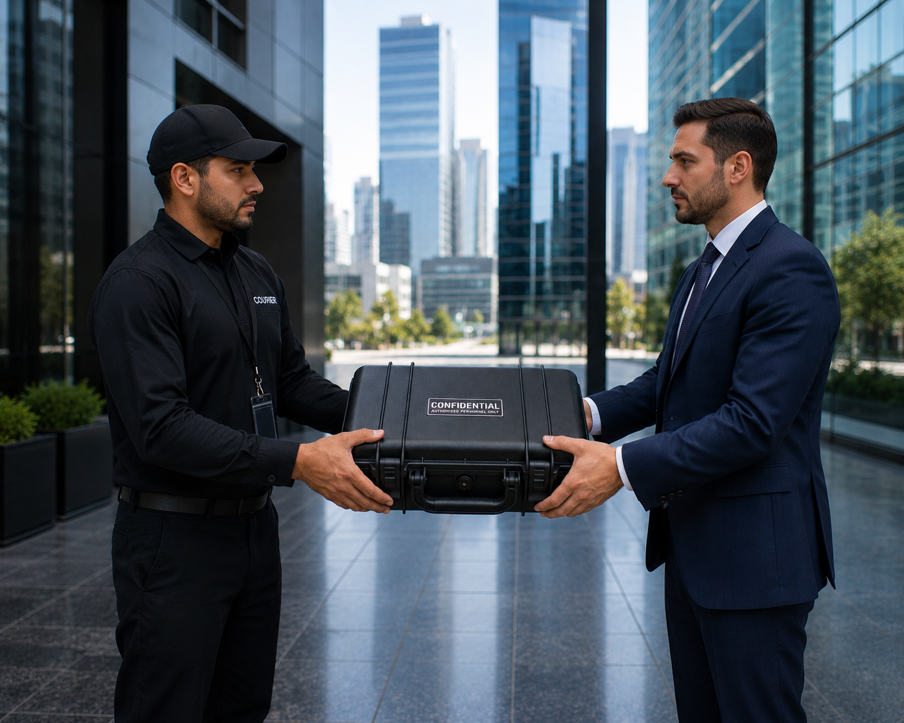

Why KeyPath Exists
KeyPath Logistics was established to provide organizations with a logistics partner that values accountability, documentation, and disciplined execution as much as transportation itself.
KeyPath Logistics is a Louisiana-based logistics company built on disciplined operations, standardized procedures, and professional execution.
Request a QuoteKeyPath Logistics was established to provide organizations with a logistics partner that values accountability, documentation, and disciplined execution as much as transportation itself.
KeyPath Logistics is a Louisiana-based logistics company built on disciplined operations, standardized procedures, and professional execution. Our objective is to reduce operational risk by providing dependable logistics supported by accountability, documented processes, and consistent service.
KeyPath Logistics is a Louisiana-based logistics company built on disciplined operations, standardized procedures, and professional execution. Our objective is to reduce operational risk by providing dependable logistics supported by accountability, documented processes, and consistent service.
KeyPath Logistics was established to provide organizations with a logistics partner that values accountability, documentation, and disciplined execution as much as transportation itself.
KeyPath Logistics is a Louisiana-based logistics company built on disciplined operations, standardized procedures, and professional execution. Our objective is to reduce operational risk by providing dependable logistics supported by accountability, documented processes, and consistent service.
Explore Services
Tell us about your logistics requirements and a member of our team will contact you to discuss a solution tailored to your operational needs.
(225) 422-7284
info@keypathlogistics.com
Baton Rouge, Louisiana